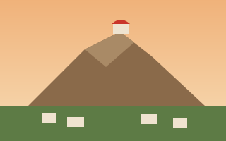
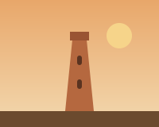
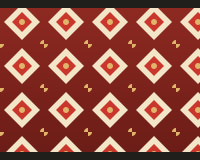
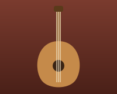
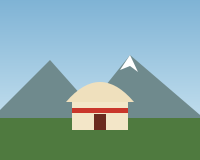
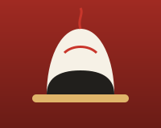
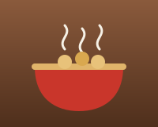
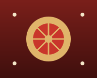
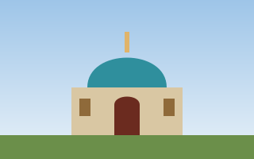
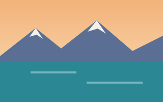

ПамятникСулайман-Тоо
Ошская область
Культурное наследие Кыргызстана
Добро пожаловать на
«Мурас» — это цифровая платформа, посвящённая сохранению, изучению и популяризации культурного наследия Кыргызской Республики.
Сохраняя прошлое —
вдохновляем будущее!
Откройте для себя богатство кыргызской культуры в разных её проявлениях.

Места и объекты исторического наследия.
→
Традиционные изделия и мастерство.
→
Комуз, кюу и музыкальные традиции.
→«Манас» и устное народное творчество.
→
Образ жизни и традиции кочевников.
→
Традиционные костюмы кыргызского народа.
→
Блюда и кулинарные традиции Кыргызстана.
→
Праздники, обряды и народные традиции.
→
ПамятникОшская область
 Архитектура
Архитектура
Чуйская область

ЭпосТаласская область

Природный объектИссык-Кульская область
Схема Кыргызстана с областями и главными объектами. Нажмите на красную отметку, чтобы узнать об объекте и открыть его страницу.
Культура — это душа народа, его история, традиции и ценности.
Недавно добавленные разделы.
НАСЛЕДИЕ ПОКОЛЕНИЙ
Культурное наследие Кыргызстана формировалось на протяжении многих веков. Оно объединяет историю, традиции, искусство, музыку, ремёсла и уникальное наследие кочевой цивилизации.